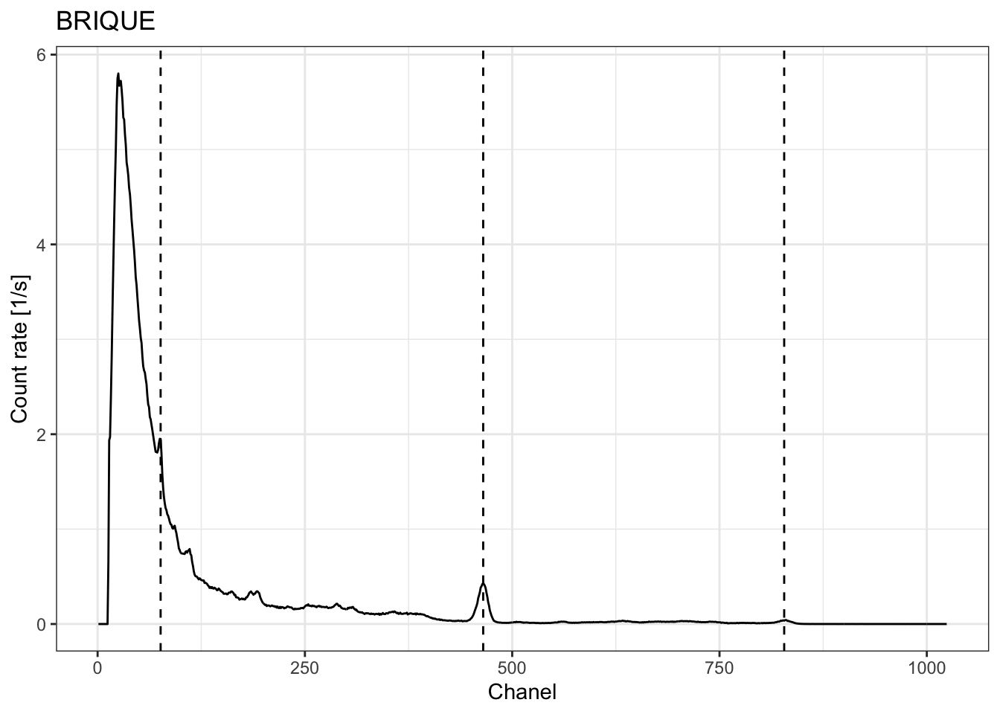

CRP2A Calibration Curve #1
Canberra Inspector 1000 - LaBr
CRP2A Luminescence Team
2019-11-07
Source:vignettes/crp2a_1.Rmd
crp2a_1.RmdImport files
# Import CNF files for calibration
calib_dir <- system.file("extdata/BDX100/calibration", package = "gamma")
(calib_spc <- read(calib_dir))
#> A collection of 7 gamma spectra: BRIQUE, C341, C347, GOU, LMP, MAZ, PEP
# Import CNF files for background noise measurement
noise_dir <- system.file("extdata/BDX100/background", package = "gamma")
(noise_spc <- read(noise_dir))
#> Gamma spectrum:
#> * name: BDF
#> * date: 2009-07-24 10:22:46
#> * live time: 18296.71
#> * real time: 18327.16
#> * chanels: 1024
#> * energy range: -1.92 3323.47Inspect spectra
Reference spectra
Lines used for energy scale calibration (in keV):
- Pb212: 238
- K40: 1461
- Tl208: 2615
BRIQUE
plot(calib_spc[["BRIQUE"]], xaxis = "energy", yaxis = "rate") +
ggplot2::labs(title = "BRIQUE") +
ggplot2::theme_bw()
C347
plot(calib_spc[["C347"]], xaxis = "energy", yaxis = "rate") +
ggplot2::labs(title = "C347") +
ggplot2::theme_bw()
GOU
plot(calib_spc[["GOU"]], xaxis = "energy", yaxis = "rate") +
ggplot2::labs(title = "GOU") +
ggplot2::theme_bw()
LMP
plot(calib_spc[["LMP"]], xaxis = "energy", yaxis = "rate") +
ggplot2::labs(title = "LMP") +
ggplot2::theme_bw()


Calibration curve
Summary

#>
#> Call:
#> lm(formula = dose_value ~ signal_value, data = fit_data)
#>
#> Residuals:
#> BRIQUE C341 C347 GOU LMP MAZ PEP
#> -3.825 15.717 -6.247 -49.117 23.748 -14.194 33.918
#>
#> Coefficients:
#> Estimate Std. Error t value Pr(>|t|)
#> (Intercept) -6.168e+01 3.081e+01 -2.002 0.102
#> signal_value 3.203e-02 6.053e-04 52.913 4.56e-08 ***
#> ---
#> Signif. codes: 0 '***' 0.001 '**' 0.01 '*' 0.05 '.' 0.1 ' ' 1
#>
#> Residual standard error: 30.43 on 5 degrees of freedom
#> Multiple R-squared: 0.9982, Adjusted R-squared: 0.9979
#> F-statistic: 2800 on 1 and 5 DF, p-value: 4.559e-08R session
#> R version 3.6.1 (2017-01-27)
#> Platform: x86_64-pc-linux-gnu (64-bit)
#> Running under: Ubuntu 16.04.6 LTS
#>
#> Matrix products: default
#> BLAS: /home/travis/R-bin/lib/R/lib/libRblas.so
#> LAPACK: /home/travis/R-bin/lib/R/lib/libRlapack.so
#>
#> locale:
#> [1] LC_CTYPE=en_US.UTF-8 LC_NUMERIC=C
#> [3] LC_TIME=en_US.UTF-8 LC_COLLATE=en_US.UTF-8
#> [5] LC_MONETARY=en_US.UTF-8 LC_MESSAGES=en_US.UTF-8
#> [7] LC_PAPER=en_US.UTF-8 LC_NAME=C
#> [9] LC_ADDRESS=C LC_TELEPHONE=C
#> [11] LC_MEASUREMENT=en_US.UTF-8 LC_IDENTIFICATION=C
#>
#> attached base packages:
#> [1] stats graphics grDevices utils datasets methods base
#>
#> other attached packages:
#> [1] magrittr_1.5 gamma_0.2.0
#>
#> loaded via a namespace (and not attached):
#> [1] Rcpp_1.0.2 compiler_3.6.1 pillar_1.4.2 later_1.0.0
#> [5] tools_3.6.1 digest_0.6.22 evaluate_0.14 memoise_1.1.0
#> [9] tibble_2.1.3 gtable_0.3.0 pkgconfig_2.0.3 rlang_0.4.1
#> [13] shiny_1.4.0 yaml_2.2.0 pkgdown_1.4.1 xfun_0.10
#> [17] fastmap_1.0.1 rxylib_0.2.4 stringr_1.4.0 knitr_1.25
#> [21] desc_1.2.0 fs_1.3.1 rprojroot_1.3-2 grid_3.6.1
#> [25] R6_2.4.0 rmarkdown_1.16 ggplot2_3.2.1 backports_1.1.5
#> [29] scales_1.0.0 promises_1.1.0 htmltools_0.4.0 MASS_7.3-51.4
#> [33] assertthat_0.2.1 mime_0.7 xtable_1.8-4 colorspace_1.4-1
#> [37] httpuv_1.5.2 labeling_0.3 stringi_1.4.3 lazyeval_0.2.2
#> [41] munsell_0.5.0 crayon_1.3.4